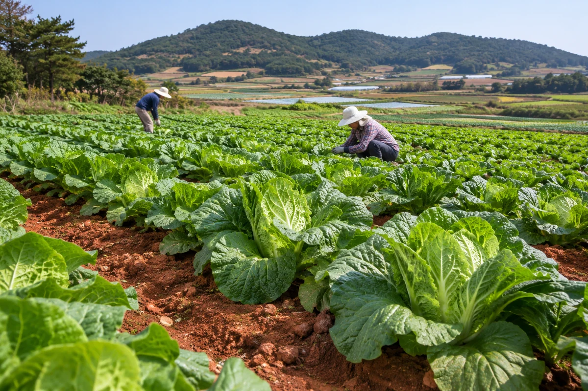
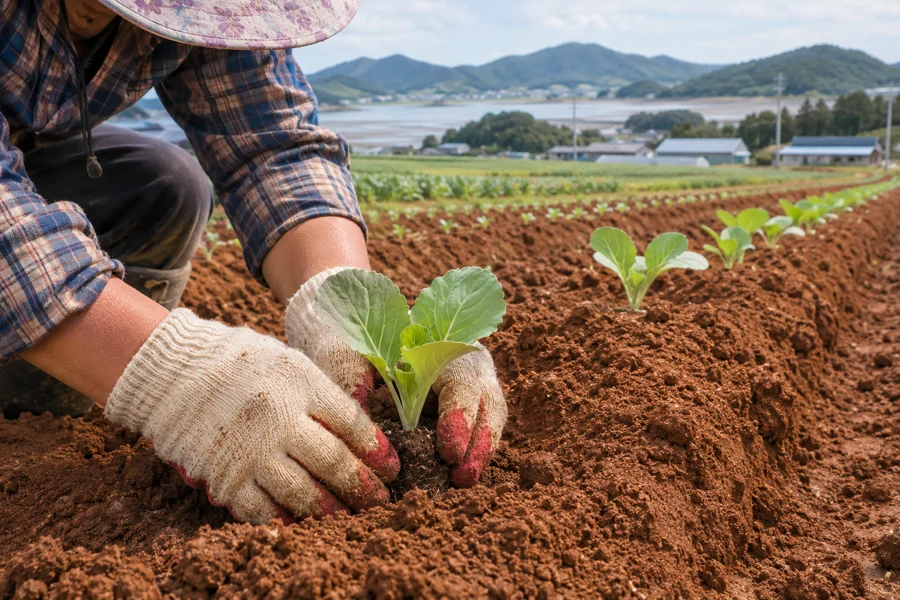
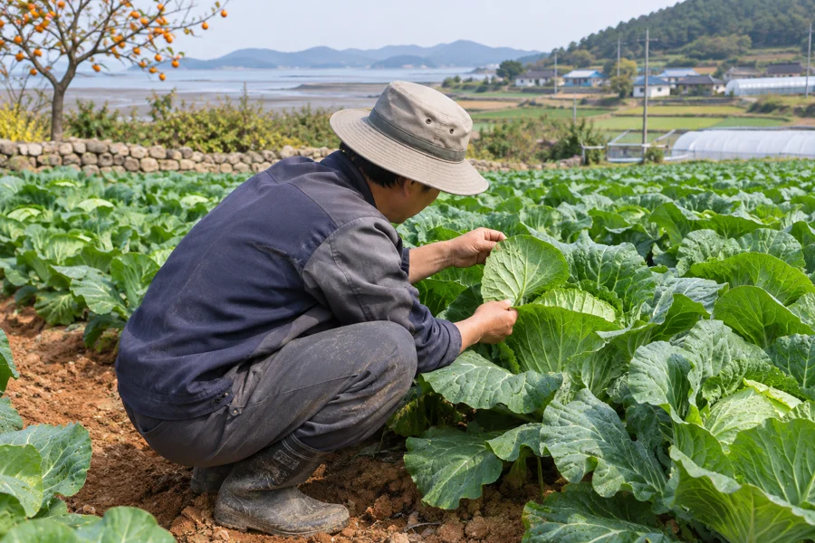
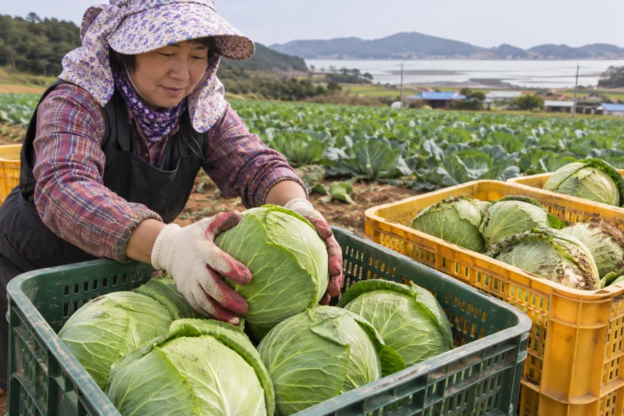

무안의 친환경 농산물
트리플영농조합법인은 전남 무안에서 친환경 농산물을 생산합니다.
아래 재배 과정은 소개용 예시입니다.

재배에서 선별까지

밭 준비
작물의 특성에 맞춰 흙을 정리하고 모종을 심습니다.

생육 관찰
날씨와 작물의 상태를 살피며 물주기와 잡초 관리를 합니다.

수확과 선별
수확한 농산물을 크기와 상태에 따라 골라 출하를 준비합니다.
이미지는 AI로 생성한 재배 과정 예시입니다.